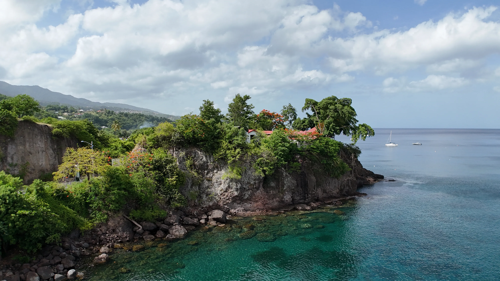

Drone professionnel en Guadeloupe : services, tarifs et réglementation

Le drone professionnel s'est imposé en quelques années comme un outil incontournable pour de nombreux secteurs d'activité. En Guadeloupe et dans les Antilles françaises, les conditions climatiques, la topographie insulaire et la biodiversité exceptionnelle font du drone un allié précieux pour les entreprises, les collectivités et les exploitants agricoles.
Mais concrètement, à quoi sert un drone professionnel en Guadeloupe ? Combien ça coûte ? Quelle est la réglementation ? Ce guide vous donne toutes les réponses.
À quoi sert un drone professionnel en Guadeloupe ?
Les applications du drone en Guadeloupe sont nombreuses et variées. Voici les principales prestations proposées par un télépilote professionnel sur l'archipel :
Photographie et vidéo aérienne
La photographie aérienne par drone permet d'obtenir des images haute résolution pour l'immobilier, le tourisme, la communication d'entreprise ou l'événementiel. Les prises de vues vidéo 4K offrent un rendu cinématographique idéal pour les clips promotionnels et les supports de communication. En Guadeloupe, les paysages exceptionnels — littoral turquoise, forêt tropicale, champs de canne — se prêtent particulièrement à la captation aérienne.
Inspection technique par drone
L'inspection technique par drone en Guadeloupe concerne les toitures, façades, pylônes, ponts, éoliennes et infrastructures difficiles d'accès. Le drone remplace les interventions humaines en hauteur, réduit les risques et divise le temps d'inspection par trois. Le livrable est un rapport photographique géolocalisé avec identification des anomalies.
Cartographie et orthophotos
La cartographie aérienne par drone produit des orthomosaïques haute résolution (jusqu'à 2 cm/px), des plans de masse géoréférencés et des cartes exploitables dans les logiciels SIG. C'est un outil essentiel pour l'aménagement du territoire, le suivi de chantiers BTP et la gestion foncière en Guadeloupe.
Photogrammétrie et modélisation 3D
La photogrammétrie par drone permet de créer des nuages de points denses, des modèles 3D texturés et des modèles numériques de surface (MNS). En Guadeloupe, cette technique est utilisée pour la documentation du patrimoine historique (moulins à vent, habitations coloniales), le suivi d'ouvrages d'art et la modélisation de sites naturels.
Topographie et cubatures
Grâce au module RTK embarqué, le drone offre un positionnement centimétrique pour les relevés topographiques. Le calcul de volumes (déblais/remblais) est réalisé avec une précision comparable à celle d'un géomètre, mais en une fraction du temps. Idéal pour les chantiers BTP en Guadeloupe.
Agriculture de précision
Le drone multispectral en Guadeloupe permet de calculer les indices de végétation (NDVI, NDRE, NDWI) pour détecter le stress hydrique, le stress azoté et les maladies sur les cultures. Les exploitants agricoles de banane, canne à sucre et maraîchage utilisent ces données pour optimiser l'irrigation et réduire les intrants phytosanitaires.
Combien coûte une prestation drone en Guadeloupe ?
Les tarifs varient selon la nature de la mission, la surface à couvrir, la complexité du terrain et les livrables demandés. Voici des fourchettes indicatives :
- Photographie aérienne : à partir de 250 € (captation + fichiers RAW et JPEG)
- Vidéo drone 4K : à partir de 250 € (captation + fichiers bruts)
- Inspection technique : à partir de 500 € (captation + rapport géolocalisé)
- Cartographie / orthophotos : à partir de 500 € (captation RTK + traitement + livrables SIG)
- Photogrammétrie 3D : à partir de 500 € (captation + traitement + modèle 3D)
- Agriculture de précision : à partir de 500 € (captation multispectrale + cartes NDVI)
Chaque projet étant unique, un devis personnalisé est systématiquement établi sous 24h après échange sur vos besoins.
Réglementation drone en Guadeloupe
La réglementation drone en Guadeloupe est la même qu'en métropole — elle est définie par la DGAC (Direction Générale de l'Aviation Civile) et le règlement européen UAS.
Pour exercer en tant que télépilote professionnel en Guadeloupe, il faut :
- Être titulaire du CATS (Certificat d'Aptitude au Télépilotage de Systèmes d'aéronefs)
- Déclarer chaque mission sur la plateforme AlphaTango
- Respecter les zones de restriction de vol (zones rouges, orange, jaunes autour des aéroports, zones militaires, espaces protégés)
- Obtenir les autorisations préfectorales pour les vols en zone peuplée
En Guadeloupe, les principales restrictions concernent les abords de l'aéroport Pôle Caraïbes (Pointe-à-Pitre), l'aérodrome de Baillif, la zone militaire et certaines zones naturelles protégées. Notre carte interactive vous permet de visualiser toutes les restrictions de vol sur l'archipel.
Pourquoi choisir un télépilote local en Guadeloupe ?
Faire appel à un télépilote basé en Guadeloupe présente plusieurs avantages concrets :
- Connaissance du terrain : conditions météo tropicales (alizés, pluies soudaines, chaleur), relief volcanique, végétation dense — un pilote local sait adapter ses missions.
- Réactivité : pas de frais de déplacement depuis la métropole, intervention rapide sur tout l'archipel.
- Réseau local : connaissance des interlocuteurs administratifs (préfecture, DGAC, AlphaTango) pour obtenir les autorisations rapidement.
- Disponibilité : intervention possible sur les îles voisines — Marie-Galante, Les Saintes, La Désirade, Saint-Martin, Saint-Barthélemy.
Vous avez un projet drone en Guadeloupe ?
Décrivez votre besoin — devis personnalisé sous 24h.
Demander un devis →KanaloEye — Votre partenaire drone en Guadeloupe
KanaloEye est une entreprise de drone professionnel basée en Guadeloupe, fondée par Sébastien Cnudde, télépilote certifié DGAC (CATS). Équipé du DJI M3M Multispectral avec module RTK, KanaloEye propose des prestations de photographie aérienne, vidéo 4K, inspection technique, cartographie, photogrammétrie 3D, topographie et agriculture de précision sur l'ensemble des Antilles françaises.
Consultez nos services, nos réalisations ou contactez-nous pour discuter de votre projet.